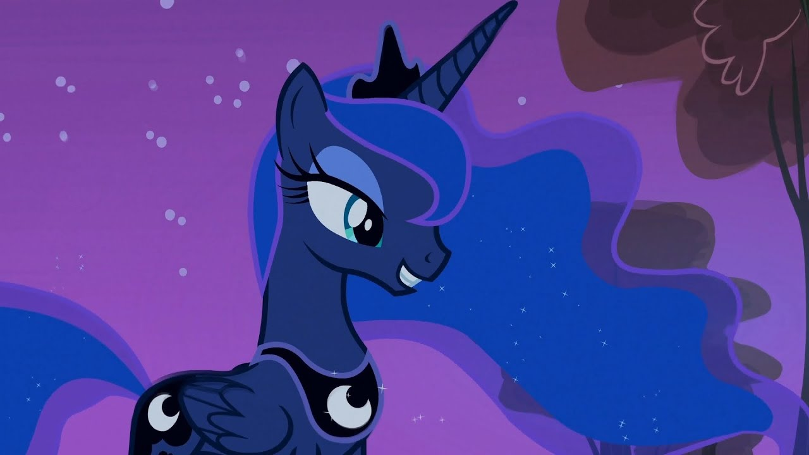

Это мой топ самых красивых персонажей в мультсериале My Little Pony. В данном топе будут рассмотрена только индивидуальная красота персонажей. И так, начнем!
Содержние:
10. Шайнинг Армор
Этот топ откроет брат Твайлайт - Шайнинг Армор. Шайнинг Армор известен своей красотой и элегантностью.
Его стиль и элегантность проявляются и в его движениях.
Когда он идет, он выглядит как король, который правит своим королевством.
Его осанка и манера держать себя делают его одним из самых красивых персонажей в мире My Little Pony.
В целом, Шайнинг Армор является воплощением красоты, благородства и силы.
9. Радуга Дэш
 Радуга Дэш является пегасом, то есть лошадью с крыльями.
Она также имеет особую способность управлять молниями и создавать радугу.
Она имеет яркий и уникальный стиль, который делает ее очень привлекательной для других персонажей.
Ее радужная грива и хвост делают ее очень заметной и привлекательной для других пони.
Кроме того, Радуга Дэш является очень сильной и независимой пони, которая не боится высказывать свое мнение и защищать своих друзей.
Радуга Дэш является пегасом, то есть лошадью с крыльями.
Она также имеет особую способность управлять молниями и создавать радугу.
Она имеет яркий и уникальный стиль, который делает ее очень привлекательной для других персонажей.
Ее радужная грива и хвост делают ее очень заметной и привлекательной для других пони.
Кроме того, Радуга Дэш является очень сильной и независимой пони, которая не боится высказывать свое мнение и защищать своих друзей.
Радуга Дэш является пегасом, то есть лошадью с крыльями.
Она также имеет особую способность управлять молниями и создавать радугу.
Она имеет яркий и уникальный стиль, который делает ее очень привлекательной для других персонажей.
Ее радужная грива и хвост делают ее очень заметной и привлекательной для других пони.
Кроме того, Радуга Дэш является очень сильной и независимой пони, которая не боится высказывать свое мнение и защищать своих друзей.
8. Пинки Пай
Пинки Пай отличается своим ярким характером, позитивом и, конечно же, красотой.
Пинки Пай часто одевается в яркие и забавные наряды, подчеркивая свою индивидуальность и творческий подход.
Ее стиль одежды также является отражением ее характера, так как она любит все, что связано с весельем и радостью.
Пинки Пай также имеет яркие голубые глаза, которые добавляют ее образу очарования.
В целом, Пинки Пай является одним из самых красивых и ярких персонажей.
7. Сансет Шиммер
Сансет предпочитает носить современную и стильную одежду, которая подчеркивает ее индивидуальность.
Ее характер также делает ее привлекательной для зрителей.
Сансет Шиммер обладает сильным и независимым характером, который помогает ей преодолевать трудности и достигать своих целей.
Она также является очень умной и талантливой, что делает ее ценным членом команды.
Сансет Шиммер является одним из любимых персонажей многих зрителей благодаря своей уникальной красоте, стилю и характеру.
6. Рарити
Рарити обладает уникальной внешностью и ее стиль может быть привлекательными для зрителей.
Ее стиль одежды часто меняется, но всегда остается ярким и экстравагантным.
У нее белоый окрас с тёмно-фиолетовыми стильно уложенными гривой и хвостом. Цвет глаз - сине-фиолетовый.
5. Принцесса Селестия
Принцесса Селестия является одной из двух правителей волшебной страны Эквестрии, а также старшей сестрой принцессы Луны.
Селестия известна своим ярким и неповторимым образом. У нее длинная шелковистая грива и хвост, которые окрашены в цвет утренней зари.
Она носит элегантную корону на голове и мантию, украшенную звездами.
Принцесса Селестия является олицетворением света и добра, и ее красота не только физическая, но и духовная.
4. Твайлайт Спаркл/Сумеречная Искорка
Твайлайт Спаркл, главная героиня из вселенной My Little Pony, является одной из самых привлекательных и стильных персонажей в своем роде.
Она имеет отличительные черты, которые делают ее уникальной и привлекательной.
Твайлайт всегда выглядит аккуратно и элегантно, даже когда она находится в окружении своих друзей или в трудных ситуациях.
Это придает ей изысканный и благородный вид.
У Твайлайт длинные сиреневые волосы с розовыми прядями, которые подчеркивают ее индивидуальность и уникальность.
3. Принцесса Луна

Принцесса Луна - еще один прекрасный персонажем. Она является сестрой-близнецом принцессы Селестии и имеет свою уникальную красоту и стиль.
Принцесса Луна имеет уникальный внешний вид, она является аликорном с крыльями и рогом на голове.
Ее волосы длинные и серебристо-синие, что подчеркивает ее королевский статус.
Принцесса Луна предпочитает носить элегантные и стильные наряды, которые отражают ее красоту и благородство.
2. Принцесса Каденс
Принцесса Каденс, ее красота и изящество делают ее одной из самых любимых персонажей среди поклонников этого мультфильма.
Принцесса Каденс обладает уникальной внешностью, она имеет длинные розовые волосы и большие сереневые глаза.
Стиль одежды принцессы Каденс отличается элегантностью и изысканностью.
Она предпочитает носить платья с длинными юбками, украшенные кружевами и вышивкой.
1. Флаттершай
И наконец то закрывает наш список Флаттершай, которая имеет уникальный внешний вид.
Она - пегас с крыльями, которые позволяют ей летать. Флаттершай предпочитает носить удобную и стильную одежду.
Она часто одевается в платья с короткими рукавами и длинные юбки, которые подчеркивают ее женственность. Флаттершай обладает добрым и заботливым характером.
Она всегда готова прийти на помощь своим друзьям и помочь им в трудную минуту. Она также очень скромная и не любит быть в центре внимания.